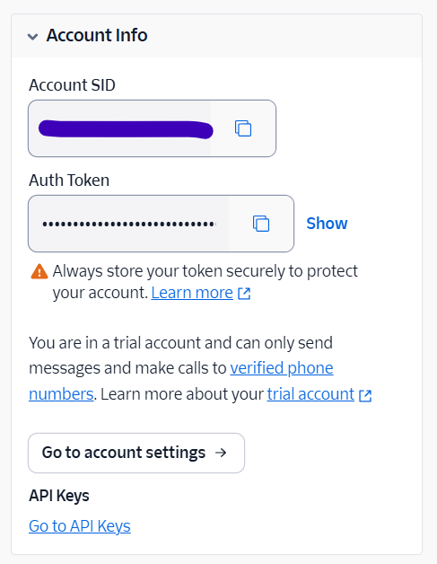

Twilio
Contexto
Twilio é uma plataforma de comunicações na nuvem que oferece APIs RESTful para construir aplicações de voz, mensagem, vídeo e muito mais. A coleção disponibiliza recursos de alto nível que permitem criar, gerenciar e monitorar contas, nós de endereço, endereços de SMS, aplicações e números de telefone programaticamente.
O público-alvo principal são desenvolvedores, engenheiros de integração e equipes de produto que precisam incorporar funcionalidades de comunicação em seus serviços. A API serve tanto para empresas que desejam manter controle total de suas infraestruturas de comunicação quanto para startups que buscam escalabilidade e automação.
Entre os principais recursos oferecidos, estão a criação e gerenciamento de subcontas, a provisão de endereços de telefonia (voIP, móvel, nacional, toll‑free), a criação de aplicações para chamadas ou campanhas de mensagem, a compra de números de telefone por país ou zona geográfica específica, a consulta de saldo de contas, bem como a criação, consulta e exclusão de chamadas de saída para números de telefone e endpoints SIP. Esses endpoints são acessados por requisições HTTP simples e retornam respostas em JSON/XML, facilitando a integração em diversas linguagens e frameworks de aplicação.
Autenticação
Tipo: Basic Auth (usuário e senha)
Configuração da conta conectada:
| Variável | Valor |
|---|---|
| password | Auth Token/API Key Secret |
| username | Account SID/API Key SID |
Username & Password
Existem três tipos diferentes de credenciais do Twilio: Credenciais de conta, credenciais de conta de teste e credenciais de API Key, a recomendação é usar API Keys para controle das permissões, observe que certas operações podem não funcionar a depender das permissões escolhidas.
Na página inicial de uma conta no console do Twilio, desça até encontrar a seção abaixo

Aqui, é possível usar os dados da conta (Account SID e Auth token) como, respectivamente, usuário e senha na autenticação do Skyone Studio, permitindo utilizar qualquer operação da API que a conta tenha acesso. Em Go to API Keys, você terá acesso ao painel de criação de API Keys e às credenciais de teste.
Operações
| Nome da Operação | Método | Descrição da Função |
|---|---|---|
| Create a new Twilio Subaccount from the account making the request | POST | Criar uma subconta Twilio a partir da conta que faz o pedido. |
| Fetch the account specified by the provided Account Sid | GET | Recupera os detalhes da conta indicada pelo Sid do usuário. |
| Modify the properties of a given Account | POST | Altera as propriedades de uma conta específica. |
| Create Address | POST | Cria um novo endereço para a conta especificada. |
| List Address | GET | Retorna a lista de endereços vinculados à conta especificada. |
| Delete Address | DELETE | Remove permanentemente o endereço identificado por Sid para a conta especificada. |
| Fetch Address | GET | Recupera os detalhes de um endereço existente na conta especificada. |
| Update Address | POST | Atualiza o endereço de uma conta identificada pelo ID. |
| List Dependent Phone Number | GET | Lista todos os números de telefone dependentes associados a um endereço específico do usuário. |
| Create a new application within your account | POST | Criar um novo aplicativo em sua conta. |
| Retrieve a list of applications representing an application within the requesting account | GET | Recupera a lista de aplicativos da conta requisitada. |
| Delete the application by the specified application sid | DELETE | Apagar aplicação usando o SID especificado. |
| Fetch the application specified by the provided sid | GET | Buscar o aplicativo especificado pelo SID fornecido. |
| Updates the application's properties | POST | Atualiza as propriedades do aplicativo. |
| Fetch an instance of an authorized-connect-app | GET | Recupera uma instância de uma aplicação connect autorizada. |
| Retrieve a list of authorized-connect-apps belonging to the account used to make the request | GET | Retorna a lista de apps autorizados da conta. |
| List Available Phone Number Country | GET | Listar números de telefone disponíveis para a conta. |
| Fetch Available Phone Number Country | GET | Obtém números de telefone disponíveis em um país para uma conta específica. |
| List Available Phone Number Local | GET | Listar números de telefone local disponíveis em um país específico. |
| List Available Phone Number Machine To Machine | GET | Lista números de telefone M2M disponíveis no país informado para a conta. |
| List Available Phone Number Mobile | GET | Lista números móveis disponíveis para compra em determinado país, retornando informação de números ainda livres. |
| List Available Phone Number National | GET | Listar números nacionais disponíveis no país. |
| List Available Phone Number Shared Cost | GET | Obter lista de números de telefone disponíveis com recurso de custo compartilhado no país especificado. |
| List Available Phone Number Toll Free | GET | Lista números de telefone gratuitos disponíveis na sua conta para o país especificado. |
| List Available Phone Number Voip | GET | Lista de números VoIP disponíveis por código de país. |
| Fetch the balance for an Account based on Account Sid. Balance changes may not be reflected immediately. Child accounts do not contain balance information | GET | Recupera saldo de conta pelo SID; alterações demoram e subcontas não exibem saldo. |
| Create a new outgoing call to phones, SIP-enabled endpoints or Twilio Client connections | POST | Criar chamada de saída para telefones, endpoints SIP ou conexões Twilio Client. |
| Retrieves a collection of calls made to and from your account | GET | Recupera uma lista de chamadas feitas para e a partir da sua conta. |
| Delete a Call record from your account. Once the record is deleted, it will no longer appear in the API and Account Portal logs. | DELETE | Exclui chamada da conta; removendo do log e da API. |
| Fetch the call specified by the provided Call SID | GET | Busca a chamada específica pelo Call SID fornecido. |
| Initiates a call redirect or terminates a call | POST | Inicia redirecionamento ou encerra chamada. |
| Retrieve a list of all events for a call. | GET | Liste todos os eventos de uma chamada. |
| Fetch Call Notification | GET | Recupera os detalhes de uma notificação de chamada específica. |
| List Call Notification | GET | Obtém a lista de notificações configuradas para a chamada específica. |
| Create a recording for the call | POST | Cria gravação para a chamada. |
| Retrieve a list of recordings belonging to the call used to make the request | GET | Recupera gravações vinculadas à chamada solicitada. |
| Changes the status of the recording to paused, stopped, or in-progress. Note: Pass Twilio.CURRENT instead of recording sid to reference current active recording. | POST | Muda status da gravação: pausa, parada ou em andamento; use Twilio.CURRENT para gravação ativa. |
| Fetch an instance of a recording for a call | GET | Recupere uma gravação de uma chamada. |
| Delete a recording from your account | DELETE | Excluir a gravação especificada em sua conta. |
| create an instance of payments. This will start a new payments session | POST | Inicia uma nova sessão de pagamentos na chamada especificada. |
| update an instance of payments with different phases of payment flows. | POST | Atualiza um pagamento com diferentes fases do fluxo de pagamento. |
| Create a Transcription | POST | Criar transcrição de uma chamada. |
| Stop a Transcription using either the SID of the Transcription resource or the name used when creating the resource | POST | Finaliza a transcrição usando o SID da transcrição ou o nome definido na criação. |
| Create a Siprec | POST | Criar Siprec para uma chamada específica em uma conta. |
| Stop a Siprec using either the SID of the Siprec resource or the name used when creating the resource | POST | Encerra uma Siprec usando seu SID ou o nome definido na criação. |
| Create a Stream | POST | Criar um stream de áudio para a chamada especificada. |
| Stop a Stream using either the SID of the Stream resource or the name used when creating the resource | POST | Interrompe um stream usando seu SID ou o nome definido na criação. |
| Create a new User Defined Message for the given Call SID. | POST | Criar uma nova mensagem definida pelo usuário para o Call SID especificado. |
| Subscribe to User Defined Messages for a given Call SID. | POST | Inscrever em Mensagens Definidas pelo Usuário para um Call SID. |
| Delete a specific User Defined Message Subscription. | DELETE | Deleta a assinatura específica de mensagem definida pelo usuário. |
| Fetch an instance of a conference | GET | Recupera os dados de uma conferência específica. |
| Update Conference | POST | Atualiza parâmetros da conferência usando seu Sid. |
| Retrieve a list of recordings belonging to the call used to make the request | GET | Recupera gravações vinculadas à chamada solicitada. |
| Changes the status of the recording to paused, stopped, or in-progress. Note: To use Twilio.CURRENT, pass it as recording sid. | POST | Altera status da gravação (pausa, parada, em andamento) usando Twilio.CURRENT no SID. |
| Fetch an instance of a recording for a call | GET | Recupere uma gravação de uma chamada. |
| Delete a recording from your account | DELETE | Excluir a gravação especificada em sua conta. |
| Fetch an instance of a participant | GET | Recupera os detalhes de um participante de conferência. |
| Update the properties of the participant | POST | Atualiza as propriedades do participante da conferência. |
| Kick a participant from a given conference | DELETE | Remover participante de uma conferência específica. |
| Create Participant | POST | Criar participante em conferência. |
| Retrieve a list of participants belonging to the account used to make the request | GET | Listar participantes da conta solicitante. |
| Retrieve a list of conferences belonging to the account used to make the request | GET | Recupera a lista de conferências associadas à conta utilizada na solicitação. |
| Fetch an instance of a connect-app | GET | Obter detalhes de uma aplicação conectada pelo identificador. |
| Update a connect-app with the specified parameters | POST | Atualiza connect-app com parâmetros especificados. |
| Delete an instance of a connect-app | DELETE | Apagar uma instância de connect‑app da conta selecionada. |
| Retrieve a list of connect-apps belonging to the account used to make the request | GET | Lista de connect‑apps associados à conta usada na requisição. |
| Update an incoming-phone-number instance. | POST | Atualiza a instância de número de telefone recebido. |
| Fetch an incoming-phone-number belonging to the account used to make the request. | GET | Recupera o número de telefone entrada associado à conta utilizada. |
| Delete a phone-numbers belonging to the account used to make the request. | DELETE | Exclui o número de telefone associado à conta do solicitante. |
| Fetch an instance of an Add-on installation currently assigned to this Number. | GET | Recuperar a instalação de Add‑on atualmente atribuída a este número. |
| Remove the assignment of an Add-on installation from the Number specified. | DELETE | Remove o mapeamento de add‑on a partir do número especificado. |
| Fetch an instance of an Extension for the Assigned Add-on. | GET | Recupera uma instância de Extensão vinculada ao add-on atribuído. |
| Retrieve a list of Extensions for the Assigned Add-on. | GET | Recupere a lista de extensões do Add-on atribuído. |
| Retrieve a list of Add-on installations currently assigned to this Number. | GET | Lista de add‑ons instalados no número. |
| Assign an Add-on installation to the Number specified. | POST | Atribui uma instalação de complemento ao número especificado. |
| List Incoming Phone Number Local | GET | Recupera a lista de números de telefone locais associados à conta especificada. |
| Create Incoming Phone Number Local | POST | Cria um novo número de telefone local para entrada de chamadas. |
| List Incoming Phone Number Mobile | GET | Lista os números de telefone móvel recebíveis para a conta. |
| Create Incoming Phone Number Mobile | POST | Cria um número de telefone móvel vinculado à conta para chamadas recebidas. |
| List Incoming Phone Number Toll Free | GET | Lista números de telefone de entrada gratuitos. |
| Create Incoming Phone Number Toll Free | POST | Criar número de telefone gratuito na conta. |
| Retrieve a list of incoming-phone-numbers belonging to the account used to make the request. | GET | Obtém a lista de números de telefone de entrada associados à conta atual. |
| Purchase a phone-number for the account. | POST | Adquire um número de telefone para a sua conta. |
| Fetch Key | GET | Recupera os detalhes da chave identificada pelo Sid da conta especificada. |
| Update Key | POST | Atualiza chave de API na conta especificada. |
| Delete Key | DELETE | Exclui uma chave específica de uma conta usando o id Sid. |
| List Key | GET | Lista todas as chaves de API da conta {AccountSid}. |
| Create New Key | POST | Cria uma nova chave de API para a conta indicada no caminho. |
| Delete the Media resource. | DELETE | Excluir recurso de mídia. |
| Fetch a single Media resource associated with a specific Message resource | GET | Buscar um recurso de mídia associado a uma mensagem específica. |
| Read a list of Media resources associated with a specific Message resource | GET | Lista de mídias associadas a uma mensagem específica. |
| Create Message Feedback to confirm a tracked user action was performed by the recipient of the associated Message | POST | Criar feedback de mensagem para confirmar ação do destinatário. |
| Deletes a Message resource from your account | DELETE | Exclui a mensagem do recurso na sua conta. |
| Fetch a specific Message | GET | Recupera uma mensagem específica. |
| Update a Message resource (used to redact Message body text and to cancel not-yet-sent messages) | POST | Atualiza mensagem, podendo redigir corpo ou cancelar envio pendente |
| Fetch a specific member from the queue | GET | Recupera um membro específico de uma fila. |
| Dequeue a member from a queue and have the member's call begin executing the TwiML document at that URL | POST | Remover um participante da fila e executar o TwiML da chamada. |
| Retrieve the members of the queue | GET | Recupera os membros da fila. |
| Fetch an instance of a queue identified by the QueueSid | GET | Recuperar a fila identificada por QueueSid. |
| Update the queue with the new parameters | POST | Atualiza fila com novos parâmetros. |
| Remove an empty queue | DELETE | Remove uma fila vazia. |
| Send a message | POST | Envio de mensagem para conta {AccountSid} via API Twilio. |
| Retrieve a list of Message resources associated with a Twilio Account | GET | Obtém a lista de mensagens vinculadas à conta Twilio. |
| Create a new Signing Key for the account making the request. | POST | Crie uma nova chave de assinatura para a conta que faz a solicitação. |
| List Signing Key | GET | Lista todas as chaves de assinatura disponíveis para a conta. |
| Fetch a notification belonging to the account used to make the request | GET | Recuperar notificação associada à conta solicitante. |
| Retrieve a list of notifications belonging to the account used to make the request | GET | Recupera a lista de notificações associadas à conta que faz a requisição. |
| Fetch an outgoing-caller-id belonging to the account used to make the request | GET | Recuperar um número de identificação de chamador de saída associado à conta. |
| Updates the caller-id | POST | Atualiza o Caller ID |
| Delete the caller-id specified from the account | DELETE | Excluir o identificador de chamada especificado na conta. |
| Retrieve a list of outgoing-caller-ids belonging to the account used to make the request | GET | Recupera lista de IDs de chamadas externas pertencentes à conta usada na requisição. |
| Create Validation Request | POST | Solicita a criação e validação de um número de remetente para chamadas saídas. |
| Retrieve a list of queues belonging to the account used to make the request | GET | Recupera lista de filas associadas à conta usada na solicitação. |
| Create a queue | POST | Criar um novo grupo de chamadas (fila) para a conta. |
| Fetch an instance of a recording | GET | Recupera os detalhes de uma gravação específica. |
| Delete a recording from your account | DELETE | Excluir a gravação especificada em sua conta. |
| Fetch an instance of an AddOnResult | GET | Obter uma instância do AddOnResult. |
| Delete a result and purge all associated Payloads | DELETE | Elimina resultado e remove todos os Payloads associados. |
| Fetch an instance of a result payload | GET | Recupera uma instância de payload de resultado. |
| Delete a payload from the result along with all associated Data | DELETE | Excluir payload e dados vinculados do resultado. |
| Fetch an instance of a result payload | GET | Recupera uma instância de payload de resultado. |
| Retrieve a list of payloads belonging to the AddOnResult | GET | Obter lista de payloads do AddOnResult. |
| Retrieve a list of results belonging to the recording | GET | Retorna a lista de resultados associados à gravação. |
| Fetch Recording Transcription | GET | Obter transcrição de gravação. |
| Delete Recording Transcription | DELETE | Exclui a transcrição específica de uma gravação de conta. |
| List Recording Transcription | GET | Recupera todas as transcrições de uma gravação específica. |
| Retrieve a list of recordings belonging to the account used to make the request | GET | Recupera a lista de gravações da conta usada na solicitação |
| Fetch an instance of a short code | GET | Obter informações de um shortcode. |
| Update a short code with the following parameters | POST | Atualiza um short code com os parâmetros indicados. |
| Retrieve a list of short-codes belonging to the account used to make the request | GET | Recupera a lista de short-codes associados à conta que fez a requisição. |
| Fetch Signing Key | GET | Retorna os detalhes da chave de assinatura identificada pelo SID na conta. |
| Update Signing Key | POST | Atualiza uma chave de assinatura existente em uma conta. |
| Delete Signing Key | DELETE | Exclui uma chave de assinatura de conta especificada por SID. |
| Create a new credential list mapping resource | POST | Criar um novo recurso de mapeamento de lista de credenciais. |
| Retrieve a list of credential list mappings belonging to the domain used in the request | GET | Recupera mapeamentos de credenciais do domínio na solicitação |
| Fetch a specific instance of a credential list mapping | GET | Recuperar instância específica de mapeamento de lista de credenciais |
| Delete a credential list mapping from the requested domain | DELETE | Excluir mapeamento de lista de credenciais no domínio solicitado. |
| Create a new IP Access Control List mapping | POST | Criar nova associação de lista de controle de IP. |
| Retrieve a list of IP Access Control List mappings belonging to the domain used in the request | GET | Recupera a lista de mapeamentos da lista de controle de IP do domínio requisitado. |
| Fetch a specific instance of an IP Access Control List mapping | GET | Recupera uma instância específica de mapeamento de Lista de Controle de IP. |
| Delete an IP Access Control List mapping from the requested domain | DELETE | Exclui a associação de lista de controle de IP do domínio solicitado. |
| Create a new credential list mapping resource | POST | Criar um novo recurso de mapeamento de lista de credenciais. |
| Retrieve a list of credential list mappings belonging to the domain used in the request | GET | Recupera mapeamentos de credenciais do domínio na solicitação |
| Fetch a specific instance of a credential list mapping | GET | Recuperar instância específica de mapeamento de lista de credenciais |
| Delete a credential list mapping from the requested domain | DELETE | Excluir mapeamento de lista de credenciais no domínio solicitado. |
| Create a CredentialListMapping resource for an account. | POST | Criar mapeamento de credenciais para conta. |
| Read multiple CredentialListMapping resources from an account. | GET | Ler múltiplos recursos CredentialListMapping de uma conta. |
| Fetch a single CredentialListMapping resource from an account. | GET | Recupera uma CredentialListMapping específica de um domínio em uma conta. |
| Delete a CredentialListMapping resource from an account. | DELETE | Exclui um mapeamento de lista de credenciais de uma conta. |
| Fetch an IpAccessControlListMapping resource. | GET | Recupere um recurso de IpAccessControlListMapping. |
| Delete an IpAccessControlListMapping resource. | DELETE | Excluir um recurso de mapeamento de lista de controle de acesso IP. |
| Create a new IpAccessControlListMapping resource. | POST | Cria um novo recurso de mapeamento de lista de controle de acesso a IP. |
| Retrieve a list of IpAccessControlListMapping resources. | GET | Recupera uma lista de recursos IpAccessControlListMapping. |
| Fetch an instance of a Domain | GET | Buscar instância de domínio. |
| Update the attributes of a domain | POST | Atualiza os atributos de um domínio SIP. |
| Delete an instance of a Domain | DELETE | Remover a instância de um domínio do endereço SIP. |
| Retrieve a list of credentials. | GET | Recupera a lista de credenciais. |
| Create a new credential resource. | POST | Cria um novo recurso de credencial. |
| Fetch a single credential. | GET | Recupera uma credencial única. |
| Update a credential resource. | POST | Atualizar recurso de credencial. |
| Delete a credential resource. | DELETE | Remove uma credencial de uma lista de credenciais em uma conta específica. |
| Get a Credential List | GET | Obtém uma lista de credenciais da conta SIP. |
| Update a Credential List | POST | Atualiza a lista de credenciais de uma conta SIP. |
| Delete a Credential List | DELETE | Excluir uma lista de credenciais do SIP da conta. |
| Get All Credential Lists | GET | Recupera todas as listas de credenciais associadas à conta SIP. |
| Create a Credential List | POST | Cria uma lista de credenciais para o endpoint SIP da conta. |
| Retrieve a list of domains belonging to the account used to make the request | GET | Recuperar lista de domínios que pertencem à conta que fez a requisição. |
| Create a new Domain | POST | Cria um novo domínio. |
| Retrieve a list of IpAccessControlLists that belong to the account used to make the request | GET | Lista os IpAccessControlLists da conta atual. |
| Create a new IpAccessControlList resource | POST | Cria um novo recurso IpAccessControlList. |
| Fetch a specific instance of an IpAccessControlList | GET | Recupera a instância específica de uma IpAccessControlList. |
| Rename an IpAccessControlList | POST | Renomear uma lista de controle de acesso IP. |
| Delete an IpAccessControlList from the requested account | DELETE | Remover uma lista de controle de IP da conta solicitada. |
| Read multiple IpAddress resources. | GET | Recupera múltiplas IPAddress de uma lista de controle de acesso SIP. |
| Create a new IpAddress resource. | POST | Criar um novo recurso de endereço IP em um IPACL. |
| Read one IpAddress resource. | GET | Buscar único recurso IpAddress em lista de controle de acesso SIP. |
| Update an IpAddress resource. | POST | Atualiza um endereço IP em uma lista de controle de acesso. |
| Delete an IpAddress resource. | DELETE | Excluir um recurso de endereço IP. |
| Create a new token for ICE servers | POST | Cria um novo token para servidores ICE. |
| Fetch an instance of a Transcription | GET | Recupera os detalhes de uma transcrição específica de uma conta. |
| Delete a transcription from the account used to make the request | DELETE | Excluir uma transcrição da conta usada na solicitação. |
| Retrieve a list of transcriptions belonging to the account used to make the request | GET | Recupera a lista de transcrições da conta usada na solicitação. |
| Retrieve a list of usage-records belonging to the account used to make the request | GET | Recupera a lista de registros de uso da conta usada na solicitação. |
| List Usage Record All Time | GET | Lista todos os registros de uso de conta (All Time). |
| List Usage Record Daily | GET | Lista registros diários de uso da conta. |
| List Usage Record Last Month | GET | Listar registros de uso do último mês da conta. |
| List Usage Record Monthly | GET | Lista registros mensais de uso da conta. |
| List Usage Record This Month | GET | Lista os registros de uso deste mês para a conta especificada. |
| List Usage Record Today | GET | Listar registros de uso de hoje para a conta especificada. |
| List Usage Record Yearly | GET | Retorna registros de uso anual para a conta especificada. |
| List Usage Record Yesterday | GET | Lista os registros de uso de ontem para a conta. |
| Fetch and instance of a usage-trigger | GET | Buscar uma instância de um gatilho de uso. |
| Update an instance of a usage trigger | POST | Atualiza uma instância de um gatilho de uso. |
| Delete Usage Trigger | DELETE | Exclui o gatilho de uso de uma conta específica. |
| Create a new UsageTrigger | POST | Criar novo Gatilho de Uso. |
| Retrieve a list of usage-triggers belonging to the account used to make the request | GET | Obtém a lista de desencadeadores de uso associados à conta autenticada. |